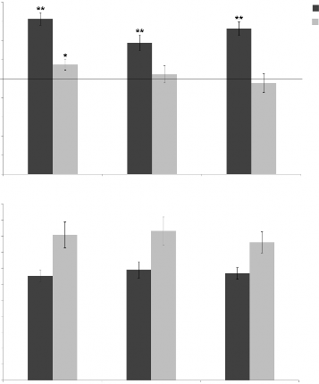

See discussions, stats, and author profiles for this publication at: https://www.researchgate.net/publication/259722712
The Role of Central and Peripheral Vision in Expert Decision Making
DOI: 10.1068/p7487 · Source: PubMed
CITATIONS
51
READS
1,404
Donghyun Ryu Loughborough University


Investigating the relative contributions of situational probability and kinematic information during action recognition and effect anticipation View project
Visibility of the pink ball in cricket View project
All content following this page was uploaded by David L Mann on 29 May 2014.
The user has requested enhancement of the downloaded file.

The role of central and peripheral vision in expert decision making
Donghyun Ryu1, Bruce Abernethy1,2, David L Mann1,3, Jamie M Poolton1, Adam D Gorman2,4
1 Institute of Human Performance, The University of Hong Kong, 5 Sassoon Road, Pokfulam, Hong Kong; e‑mail: dhryu@hku.hk; 2School of Human Movement Studies, The University of Queensland, Brisbane, Australia; 3 Research Institute MOVE Amsterdam, Faculty of Human Movement Sciences, VU University, Amsterdam, The Netherlands; 4 Movement Science–Skill Acquisition, Australian Institute of Sport, Canberra, Australia
Received 14 March 2013, in revised form 25 June 2013
Skilled decision making is critical to expertise across a broad range of human endeavours. Proficiency in decision making requires skilled performers to select from and integrate the most useful visual information available to them whilst ignoring other less salient sources of information. For instance, skilled decision making in chess is underpinned by the ability to search for and recognise structured patterns of play in an effort to encode and recall meaningful associations between chess pieces (Chase and Simon 1973). Similarly, the development of skill in airport-security screening is the result of an ability to perceptually organise and recognise objects in security images so that targeted objects stand out from other distracting objects (McCarley et al 2004). In dynamic externally paced activities like those encountered when driving, crossing a road, and playing sport, the more acute temporal demands imposed by these tasks mean that key objects must be recognised quickly, and accurately, to support optimal performance. For instance, expert drivers have a superior capacity to recognise and anticipate future hazards when driving, allowing them to decrease their incidences of vehicle accidents (Horswill and McKenna 2004; Underwood et al 2008). Similarly, skilled athletes in fast ball-sports like soccer, field hockey, and basketball are able to make better, and earlier decisions, in large part because of their ability to search for and recognise meaningful patterns of play (Allard and Starkes 1980; Allard et al 1980; Starkes 1987) and by learning the sources of information that provide the earliest possible indication of the outcome of a movement (Abernethy and Russell 1984; Jones and Miles 1978).
A technique widely used to determine the visual information relied on for skilled decision making has been to measure the eye movement patterns of expert performers. This technique has been used across a variety of domains to establish the type of visual search patterns used by skilled performers, and subsequently these search patterns have been used as the basis of models to improve the skill of lesser-accomplished performers—for instance, to enhance surgical skill in medical students (Wilson et al 2011), to rehabilitate walking after stroke (Roerdink et al 2005), and to enhance the interceptive performance of novice soccer goalkeepers (Ryu et al 2013; Savelsbergh et al 2010). A substantial body of literature has developed which demonstrates skill-related differences in visual search behaviour in decision- making tasks; however, no clear pattern has emerged to identify a particular method of search behaviour that is reliably associated with superior decision-making skill. For example, in team ball-sports the ability to quickly recognise offensive and defensive patterns of play is a crucial element of expertise, yet the visual search behaviour associated with this perceptual– cognitive advantage remains largely unclear. Experts are able to rapidly extract meaningful chunks of structured information from a visual scene (Helsen and Pauwels 1992; Helsen and Starkes 1999), though the patterns of gaze that underpin these behaviours appear to be very context specific. For instance, skilled athletes may rely on a lower search rate (ie fewer fixations per second) in some decision-making tasks (eg Bard and Fleury 1976; Helsen and Pauwels 1992), but show a higher search rate in other tasks (eg Mann et al 2009; Vaeyens et al 2007a; Williams et al 1994). The ideal search pattern also apparently varies when an identical task—for example, anticipating a soccer pass—is coupled with variations in the number of players in the scene (Williams and Davids 1998; Williams et al 1994). Further, substantial performance differences can be apparent across levels of skill when the visual search patterns are indistinguishable (Abernethy 1990a). Collectively, it is not at all clear from the existing evidence that reliable eye movement strategies exist which can explain the differences in decision making observed between levels of skill in performance domains such as complex team sports.
There are two fundamental limitations when using gaze measurement systems which track the line-of-gaze (as measured by the direction of central vision) in an effort to make inferences about the information attended to by observers. First, simply because a person directs their central vision towards a particular feature in a display, this is in no way an assurance that they are able to pick-up information from that visual fixation. Having the associated knowledge to interpret the available information is a requisite for successful information pick-up. Second, knowing the line-of-gaze of a performer does not, in itself, permit determination of whether the person’s attention is, at the time, allocated centrally around the line-of-gaze or is rather distributed to the periphery. Consequently, it is not possible to conclude whether a particular fixation location is reflective of the performer’s attention (via central vision) or is simply a convenient anchor point from which to extract information from the visual periphery [the concept of a ‘centre of gravity’ fixation or a ‘visual pivot’—see Findlay (1982), Ripoll (1991), and Zelinsky et al (1997)].
The inability of conventional eye movement recording systems to effectively separate central from peripheral information pick-up may conceal systematic skill-related differences that are present; or conversely, they may lead to false conclusions about the importance of the display features to which the line-of-gaze corresponds. A number of researchers have advocated that information pick-up from peripheral vision plays an important role in dynamic decision-making tasks, as it allows for rapid extraction of information about the positions and movements of potentially vital sources of information in time-constrained situations (eg Abernethy 1991; Williams and Davids 1998). Surprisingly though, this has not been verified empirically. In particular, it seems reasonable to expect that expert performers will possess
the capacity to make greater use of peripheral vision because they are better able to account for central task demands, and as a result are less likely to be subject to the same perceptual narrowing experienced by novices (Underwood et al 2008; Weltman and Egstrom 1966). That is to say, novice observers may require a greater amount of attentional resources to concentrate on the relatively unfamiliar information located in their central vision, ensuring they have little (or no) attentional capacity to attend to the more peripheral visual information. A technique that permits the selective presentation of information to the central and peripheral segments of the visual field is highly desirable to determine information pick-up from central and peripheral vision.
An experimental approach that offers great promise for differentiating central from peripheral vision is the gaze-contingent display-change paradigm. This technique was first developed in the 1970s for the study of perceptual span in reading (McConkie and Rayner 1975; Rayner 1975), although recent technological advances mean that it is now able to be applied to dynamic tasks where there is relative movement in the visual scene being viewed. A number of innovative approaches have been developed to manipulate the gaze-contingent display—in real time—on the basis of eye-position information. One form of modification, termed the moving window paradigm, involves centring a window around the point of fixation, effectively restricting the viewer’s vision to central vision (ie visual information available at eccentricities close to the line-of-gaze, simulating ‘tunnel vision’). A complementary form of modification, termed the moving mask paradigm, involves the use of a mask which occludes vision at and around the fovea, creating an artificial foveal scotoma, and forcing reliance on peripheral vision for information pick-up (ie ‘masked vision’). Observers are free to move their eyes in a temporally and spatially unconstrained manner in both conditions, and the window or mask moves according to the online registration of foveal gaze (for reviews see Reingold et al 2003; van Diepen et al 1998).
Reingold et al (2001) used a gaze-contingent display in conjunction with the change blindness flicker paradigm to examine perceptual span in a chess detection task. Participants were presented with a gaze-contingent window that selectively occluded peripheral vision and were asked to detect which chess piece changed position in a series of alternating images of a chessboard. In this task the window size was manipulated according to performance on the preceding tasks, with the results showing that expert chess players have a wider perceptual span—that is, they extract more information from each individual fixation. More recently, Cañal-Bruland et al (2011) used this paradigm to examine the perceptual span of soccer players. They found that skilled players did not extract more information from each fixation, though they used static slides in an attempt to capture the dynamic display conditions normally encountered within the sport. It was subsequently reasoned that the existence of a larger perceptual span for expert chess, but not expert soccer players, may reflect a limitation in the experimental design. The static slides viewed by the soccer players may not have been representative of game situations, and as a result skilled players might not have been able to fully apply their extensive task-specific knowledge of movement perception. Static slides may be practical in self-paced tasks such as chess (eg Reingold et al 2001), but not for fast- moving tasks like playing soccer. In these types of activities dynamic stimuli such as video clips may be much more appropriate to help understand the true characteristics of perceptual expertise in tasks that rely on the perception of movement.
The aim of this study was to determine the relative contributions of information pick-up from central and peripheral vision in a dynamic decision-making task. To this end, we used the gaze-contingent paradigm to examine the decision-making performance of skilled and less-skilled basketball players in three different viewing conditions: a full-image control (unrestricted) condition, a moving window (central vision only) condition, and a moving mask ( peripheral vision only) condition. When compared with performance in the full-image
control condition, a decrease in performance in the moving window condition would indicate that visual information located in peripheral vision has an important role to play in context- specific decision making. Likewise, a decrease in decision-making performance in the moving mask condition would reflect the important role usually played by information located in the central vision of an observer. We expected skilled basketball players to perform better than lesser-skilled players irrespective of the viewing condition, reflecting a superior ability to use both central and peripheral vision to support context-specific decision making. In contrast, because less-skilled observers are frequently found to experience perceptual narrowing in unfamiliar, demanding situations (eg Luo et al 2008; Weltman and Egstrom 1966), we expected the decision making of the less-skilled participants to be almost wholly supported by central vision. More specifically, we expected their performance to decrease in the moving mask condition when central vision was removed, but to remain unchanged in the moving window condition when only peripheral vision was removed and central vision was preserved.
Participants
Eleven skilled (mean age = 25.2 years, SD = 4.5 years) and eleven less-skilled male basket- ball players (mean age = 25.7 years, SD = 5.0 years) took part in the experiment. The skilled players had a mean of 12.7 years of playing experience (SD = 5.5 years), and at the time of testing were playing as a point or shooting guard in the top tier of their national league. (The guard positions in basketball are typically the ones that assume key decision-making responsibilities.) The less-skilled players were university students who had a mean of 3.1 years (SD = 2.8 years) of basketball playing experience at a recreational level. All participants had normal or corrected-to-normal vision. Ethical approval for the research was obtained from the institutional human research ethics committee prior to testing, with informed consent obtained from participants prior to the commencement of the experiment.
Apparatus
An Eyelink II (SR Research Ltd, Mississauga, ON) was used to record the eye movements of participants and to control the gaze-contingent display. The Eyelink is a video-based gaze-registration system that determines the line-of-gaze by detecting the position of the pupil and the corneal reflection. The system has high spatial resolution (noise limited to
< 0.01°) and fast temporal sampling, with the position of gaze available with delays as little as 3 ms, making the system ideal for gaze-contingent manipulations. To record eye movement data in this experiment, we relied on the monocular corneal reflection from each participant’s dominant eye using a sample rate of 250 Hz. (The dominant eye was determined by the porta test. Participants extended one arm, and with both eyes open aligned their thumb or index finger with a distant object. The dominant eye was the one most closely aligned with the object when each eye was alternately opened and closed.) The eye movement system was calibrated by asking participants to fixate on targets presented across a 9-point reference grid, and then validated in the same manner (acceptable error to < 0.5°). A further ‘drift correction’ calibration fixation was conducted prior to each trial. Eye movement data were analysed using Data Viewer software (SR Research Ltd, Mississauga, ON).
The dynamic visual stimuli were video clips of five-on-five basketball play (see Gorman et al 2011, 2012, 2013, in press). The video footage was filmed using a stationary camera placed on a raised platform at the half-court position, with all players and all markings on one half of the court visible at all times. This ensured that all clips showed footage of one team in an attacking position (and the other defending) while in close proximity to the opposition team’s basket (see figure 1a for the camera perspective shown in all clips). The film was edited so that clips ended (and the display went completely black) at the moment a critical
Experiment Builder software (SR Research Ltd, Mississauga, ON) was used to facilitate the gaze-contingent presentation of video clips. Three different viewing conditions were used:
(i) full-image control, (ii) moving window, and (iii) moving mask conditions (see figure 1). The full-image control condition presented video clips with no impediment to information uptake (ie there was no gaze-contingent restriction of vision). In the moving window condition a moving window of 5° eccentricity around the point of fixation was used to restrict information uptake to that available from the fovea and parafovea. In the moving mask condition a plain black mask of 5° eccentricity was used to restrict information uptake to that available from the periphery. Black opaque occlusion was used to ensure that information pick-up was exclusively available from the central and peripheral visual fields in the moving window and moving mask conditions, respectively [see also Cornelissen et al (2005) and Luo et al (2008), for the purpose of inducing artificial central and peripheral visual field defects]. The experimental test film consisted of a total of 48 trials (16 video clips × 3 viewing conditions) with all participants viewing the clips in the same randomised order.

(b) (c)
Procedure
Participants were seated 60 cm from the Eyelink II display monitor so that their eyes were level with the centre of the monitor. The horizontal and vertical extents of the monitor subtended 30 × 24 deg, respectively (screen size = 338 × 270 mm). Following the fitting and calibration of the gaze-registration system, an experimenter informed the participants of their task. Specifically, they were told they would see a series of video clips showing five-on-five basketball action sequences, and at the conclusion of each clip they were to decide as quickly
and as accurately as possible whether the player in possession of the ball should pass to a teammate or drive to the basket. The participant’s response was made by pushing one of two different buttons on a computer joystick (Microsoft Sidewinder Plug and Play game pad), after which there was a 5 s interval between trials. Prior to each trial participants were asked to fixate a marker in the centre of the display to check the calibration of the Eyelink system. Any drift in the eye movement system was corrected prior to commencement of the trial. Prior to testing participants were given 20 practice trials to familiarise themselves with the test procedure and with the gaze-contingent manipulations of vision. The practice clips were different from those used in the experiment proper.
Dependent variables and data analysis
Performance data. Response accuracy was determined by calculating the percentage of trials where the response of the participant matched the response unanimously agreed upon by the three expert coaches. Response time was the mean time (in ms) that elapsed from the moment the clip was occluded to the time that the button press response was registered by the computer.
Gaze behaviour data. Ten distinct areas of interest were identified to examine differences in the foveal direction on all trials. These 10 areas of interest were: (i) the player in possession of the ball (the ball-carrier), (ii) the defender of the ball-carrier, (iii–vi) each of the four attacking teammates (from closest to furthest from the ball-carrier), and (vii–x) the matching defenders of the four attacking teammates. The areas of interest changed whenever the ball was passed between players to ensure that the ball-carrier always referred to the player in possession of the ball. The location of each area of interest was coded once for every frame of video footage to produce a template that the Data Viewer software could use to detect whether the location of gaze coincided with one of the 10 areas of interest. As a result, six dependent variables were automatically calculated to evaluate the gaze behaviour on each trial. First, the search rate, defined as the number of fixations per second, was calculated by dividing the number of fixations in each trial by the length of the video clip to specifically determine whether the visual field manipulations changed the number of fixations made by participants. (A fixation was defined as gaze being maintained on any area of the video display for > 100 ms.) Second, the distribution of gaze across the 10 areas of interest was assessed for each trial by calculating two measures, the number of fixations to each area of interest, and the percentage of total viewing time spent in fixations to each of the 10 areas of interest. Next, the number of ball-carrier-specific fixation transitions was quantified by calculating the number of times per second that participants alternated their fixation between the ball-carrier, to some other area of the display, and then immediately back to the ball- carrier [the number of transitions from, then back to, the ball-carrier, is associated with decision-making expertise in sport—see Vaeyens et al (2007b)]. Finally, two measures were employed to evaluate the saccadic eye movements performed by participants in each viewing condition: the mean saccadic amplitude was determined by calculating the average angular subtense of all saccades (ie the average size in degrees of visual angle), and the frequency of the saccadic amplitudes was determined by quantifying the frequency distribution of the individual saccades according to their size. Specifically, each saccade was allocated to one of twelve bins that differed according to the amplitude of the saccade (0 G x < 1, 1 G x < 2, 2 G x < 3, 3 G x < 4, 4 G x < 5, 5 G x < 6, 6 G x < 7, 7 G x < 8, 8 G x < 9, 9 G x < 10, 10 G x < 11, H11 deg) so that a frequency distribution of the bins was created for each of the viewing conditions. The two measures were calculated to examine whether the extent of the saccadic eye movements made by the participants (and hence the extent of the search behaviour) was systematically affected by the different viewing conditions and the skill level of the participants.
The dependent variables measuring response accuracy, response time, search rate, fixation transitions, and mean saccadic amplitude were analysed using separate 2 (skill: skilled, less skilled) × 3 (viewing: full-image control, moving window, moving mask) ANOVAs with repeated measures on the second factor. Planned t-tests were used to determine whether the response accuracy in each condition was significantly different from the 50% level that would be achievable by chance/guessing in the forced-choice decision-making task. In addition, the response accuracy and response time data were subject to a 2 (skill: skilled, less skilled) × 3 (trial: 1st, 2nd, and 3rd presentation) ANOVA with repeated measures on the second factor to check whether there was any effect of learning as a result of the repeated exposure to each of the 16 clips in the three different viewing conditions. The two measures of the distribution of fixations to the different areas of interest within the display (number of fixations and percentage of total viewing time) were subject to 2 (skill) × 3 (viewing condition) × 10 (areas of interest) ANOVAs with repeated measures on the last two factors. Further, the frequency of saccadic amplitudes was subject to a 2 (skill) × 3 (viewing condition) × 12 (saccadic amplitude: 0 G x < 1, 1 G x < 2, 2 G x < 3, 3 G x < 4, 4 G x < 5, 5 G x < 6, 6 G x < 7, 7 G x < 8,
8 G x < 9, 9 G x < 10, 10 G x < 11, H11 deg) ANOVA with repeated measures on the last two factors (see Loschky and McConkie 2002). In all cases, effect sizes were reported as h2 values and a Greenhouse–Geisser correction was applied to the degrees of freedom when the assumption of sphericity was violated. The a level for all comparisons was set at p = 0.05.
Performance data
The analysis of response accuracy revealed significant main effects for skill (F1, 20 = 38.79, p < 0.001, h2 = 0.66) and viewing condition (F2, 40 = 3.36, p = 0.045, h2 = 0.14), in the absence of an interaction between these two factors (F2, 40 = 1.42, p = 0.26, h2 = 0.06) (see figure 2a). The skilled players performed better than the less-skilled players irrespective of the viewing condition. Pairwise comparisons used to examine the main effect of viewing condition revealed that response accuracy was significantly higher in the full-image control condition than it was in each of the moving window ( p = 0.012) and moving mask ( p = 0.047) conditions, with no difference evident between the moving window and moving mask conditions ( p = 0.72). Importantly, skilled players performed above chance levels irrespective of the viewing condition (full-image control and moving mask ps < 0.001; moving window p = 0.001), whereas less-skilled players performed above chance levels in only the full-image control condition ( p = 0.028). The analysis of response accuracy across successive viewings of each clip revealed a main effect for skill (F1, 20 = 39.51, p < 0.001, h2 = 0.66), but importantly there was no main effect for the number of times each clip was viewed (F2, 40 = 0.69, p = 0.506, h2 = 0.03), and there was no significant skill × trial interaction (F2,40 = 0.28, p = 0.761, h2 = 0.01), highlighting that performance did not improve as a result of repeated exposure to the same video clips.
The analysis of response time showed a significant main effect of skill (F1, 20 = 8.35, p = 0.009, h2 = 0.29), in the absence of a main effect for viewing condition (F2, 40 = 1.04, p = 0.36, h2 = 0.05), or a significant skill × viewing condition interaction (F2, 40 = 0.50, p = 0.61, h2 = 0.02) (see figure 2b). The response time of the skilled players was faster than it was for the less- skilled players irrespective of the viewing condition. Again, the analysis of response time across successive viewings of each clip revealed a main effect for skill (F1, 20 = 8.36, p = 0.009, h2 = 0.29), but reassuringly no main effect for the number of times each clip was viewed (F2, 40 = 0.45, p = 0.644, h2 = 0.02), and there was no significant skill × trial interaction (F2, 40 = 0.29, p = 0.749, h2 = 0.01), highlighting that, in line with the response accuracy data, response time did not become faster as a result of repeated exposure to the same video clips.
80
Response accuracy/%
70
60
50
40
30
20
10
0
(a)
skilled

less skilled
2200
2000
1800
Response time/ms
1600
1400
1200
1000
800
600
400
200
0
full-image control moving window moving mask
Viewing condition
Figure 2. (a) Mean response accuracy and (b) mean response time across viewing conditions for skilled and less-skilled players. Horizontal line indicates the 50% level achievable by chance guessing; stars indicate data values significantly different from the 50% level that would be achievable by simply guessing (**p < 0.01, *p < 0.05). Error bars indicate the standard error of the mean.
Gaze behaviour data
The analysis of search rate found there to be no main effect for skill (F1, 20 = 1.39, p = 0.25, h2 = 0.06; skilled group: 2.22 ± 0.49 fixations s–1; less-skilled group: 2.40 ± 0.36 fixations s–1) and viewing condition (F2, 40 = 0.38, p = 0.69, h2 = 0.02), or a significant interaction between skill and viewing condition (F2, 40 = 0.49, p = 0.61, h2 = 0.02).
The predominant areas of fixation for both skill groups and across all three viewing conditions were to the ball-carrier (AB) and his defender (DB) (see figure 3). The examination of the number of fixations allocated towards the 10 different areas of interest revealed a significant main effect of area of interest (F1.37, 27.39 = 73.89, p < 0.001, h2 = 0.79), in conjunction with a significant viewing condition × area of interest interaction (F3.52, 70.31 = 3.76, p = 0.011, h2 = 0.14), and a significant three-way skill × viewing condition × area of interest interaction
p
(F3.52, 70.31 = 3.77, p = 0.01, h2 = 0.14). All other effects were nonsignificant. Inspection of
figure 3a suggests that the significant three-way interaction was primarily due to differences in the number of fixations allocated towards the ball-carrier (AB). A skill × viewing condition ANOVA performed solely on the number of fixations on the ball-carrier confirmed the observed skill × viewing condition interaction (F2, 40 = 4.31, p = 0.02, h2 = 0.16). Specifically, the skilled participants were less likely to change the number of fixations they directed towards the ball- carrier when the visual field was restricted (although they tended to direct more fixations
(a)
5.0
4.5
4.0
Number of fixations
3.5
3.0
2.5
2.0
1.5
1.0
0.5
0.0
35
30
Viewing time/%
25
20
15
10
5
full-image control moving window moving mask
full-image control moving window moving mask
full-image control moving window moving mask
full-image control moving window moving mask
full-image control moving window moving mask
full-image control moving window moving mask
full-image control moving window moving mask
full-image control moving window moving mask
full-image control moving window moving mask
full-image control
moving window moving mask
0
skilled
less skilled
(b)
AB A1 A2 A3 A4 DB D1 D2 D3 D4
Areas of interest
towards the ball-carrier in the moving window condition when compared with the full-image control; p = 0.076). In contrast, the lesser-skilled players directed significantly fewer fixations towards the ball-carrier in the moving window condition ( p = 0.016), and also tended to direct fewer fixations towards the ball-carrier in the moving mask condition ( p = 0.074).
The analysis of the percentage of total viewing time that was directed towards the 10 areas of interest revealed significant main effects for viewing condition (F2, 40 = 4.62, p = 0.016, h2 = 0.18) and area of interest (F1.34, 26.77 = 60.71, p < 0.001, h2 = 0.75), in the presence of a significant viewing condition × area of interest interaction (F3.28, 65.53 = 4.81, p = 0.003, h2 = 0.17) and a higher-order skill × viewing condition × area of interest interaction (F3.28, 65.53 = 4.11, p = 0.008, h2 = 0.14). All other effects were nonsignificant. Inspection of figure 3b suggests that the interaction effect was again due to differences in the time spent viewing the ball-carrier.
A follow-up analysis of the percentage of time spent fixating the ball-carrier revealed a significant skill × viewing condition interaction (F2, 40 = 6.10, p = 0.005, h2 = 0.20). When compared with viewing time towards the ball-carrier in the full-image control condition, skilled players spent more time viewing the ball-carrier in the moving window condition ( p = 0.01), whereas the lesser-skilled players spent less time viewing the ball-carrier in both the moving window ( p = 0.025) and moving mask ( p = 0.013) conditions.
The analysis of fixation transitions (from ball-carrier, to another area, and immediately back to the ball-carrier) revealed a significant skill × viewing condition interaction (F2, 40 = 3.91, p = 0.028, h2 = 0.14; figure 4), in the absence of a main effect for skill (F1, 20 = 0.07, p = 0.794, h2 = 0.003), or for viewing condition (F2, 40 = 2.74, p = 0.077, h2 = 0.10). When compared with the number of fixation transitions in the full-image control condition, the less-skilled players significantly decreased their number of fixation transitions in the moving window ( p = 0.002) but not the moving mask condition ( p = 0.30), whereas there was no change in the number of transitions for the skilled players (both p s > 0.51).
0.12
Fixation transitions/transitions s–1
0.10
0.08
0.06
0.04
0.02
0.00
full-image control moving window moving mask Viewing condition
skilled
less skilled
The analysis of the mean saccadic amplitude (figure 5) revealed a significant main effect of viewing condition (F2, 40 = 16.97, p < 0.001, h2 = 0.44), in the absence of a main effect of skill (F1, 20 = 0.17, p = 0.69, h2 = 0.01), or a skill × viewing condition interaction (F2, 40 = 1.37, p = 0.27, h2 = 0.04). A posteriori pairwise comparisons revealed that, when compared with the full-image control condition, the average saccadic amplitude decreased in the moving window condition ( p = 0.042), and increased in the moving mask condition ( p = 0.005). Saccadic amplitude was significantly lower in the moving window condition than it was in the moving mask condition ( p < 0.001).
Further, the analysis of the frequency of the saccadic amplitudes (figure 6) revealed significant main effects for viewing condition (F1.08,21.54 = 6.87, p = 0.014, h2 = 0.25) and saccadic amplitude (F1.57, 31.34 = 87.89, p < 0.001, h2 = 0.81), and a significant viewing condition
× saccadic amplitude interaction (F3.22, 64.43 = 33.49, p < 0.001, h2 = 0.62). The most striking finding was the difference in the amplitude of the saccades in the moving window and mask conditions. In the moving window condition there was an increase in the relative frequency of small saccades, and a decrease in the frequency of large saccades (when compared with the full-image control condition). In contrast, in the moving mask condition there was a relative decrease in the proportion of small saccades, and an increase in the proportion of larger saccades when compared with the full-image control condition.
Mean saccadic amplitude/deg
6
5
4
3
2
1
0
full-image control moving window moving mask
Viewing condition
skilled
less skilled
full-image control: skilled
full-image control: less skilled moving window: skilled moving window: less skilled moving mask: skilled
moving mask: less skilled
40
35
30
Frequency of saccades
25
20
15
10
5
0
0 1 2 3 4 5 6 7 8 9 10 11 12
Amplitude of saccade/deg
The aim of this study was to establish the respective contributions of central and peripheral vision towards skilled decision making in a fast-paced task. A gaze-contingent display was used to selectively show video footage of dynamic scenarios to the central and/or peripheral vision of participants. Skilled and less-skilled basketball players made decisions about whether a ball-carrier should drive to the basket, or pass to one of his four teammates, while viewing in either a full-image control (unrestricted) condition, a moving window (central vision only) condition, or a moving mask (peripheral vision only) condition.
The findings revealed that the expert advantage for decision making with a full visual field remained irrespective of whether skilled participants used only their central or peripheral vision. There was no evidence of learning over the course of the study as a consequence of the participants’ repeated exposure to the 16 core video clips, indicating that the skill differences that were observed were indeed due to active information pick-up from each trial and not a consequence of any accumulated display familiarity. These results confirm—for the first time—that skilled athletes possess a superior capacity to use both their central and peripheral vision to underpin decision making in sport.
The expert advantage in decision making is remarkably robust, and it applies across the breadth of the visual field. In the full-image control condition we replicated the well- established finding that skilled athletes in a team ball-sport demonstrate better decision making than lesser-skilled athletes (Helsen and Pauwels 1992; Martell and Vickers 2004; Vaeyens et al 2007b; Williams and Davids 1998). Importantly, we have extended this finding by showing that the expert advantage remained even when information was presented to solely the central or peripheral parts of the visual field. It appears that skilled athletes possess a considerably resolute ability to recognise meaningful associations between players’ positions using central and/or peripheral vision. The gaze behaviour of the skilled participants was less influenced by restrictions to the visual field than it was for the less-skilled participants, suggesting the skilled players were better able to use the remaining information to sustain their normal pattern of gaze. For the skilled participants, the restrictions to the visual field resulted in only changes to the percentage viewing time towards the ball-carrier (in the moving window condition) and to the amplitude of the saccades (in both viewing conditions). In contrast, all but the search rate changed for the less-skilled players.
The gaze measures help to provide a useful understanding of how skilled participants use their central and peripheral vision to support their decision-making performance in normal viewing conditions. For instance, when peripheral vision was removed, the skilled players increased the time spent directing their central vision towards the ball-carrier, and reduced their mean saccadic amplitude, reflecting a more narrow (less-expansive) pattern of visual search. This adaptation is most probably a reflection of the loss of peripheral vision that would usually be used to detect which other players should be attended to; instead, they continue to focus on the ball-carrier. Perhaps surprisingly, when central vision was removed, the skilled players did not change the amount of time they spent directing their central vision towards the ball-carrier, even though this meant that the ball-carrier could not be seen. This result in itself suggests that the location of the ball-carrier may be used as an anchor point for foveal gaze—that is to say, a central position where the fovea could be directed while the relative movement of the other players could be monitored using the peripheral visual field. Verbal reports may provide a useful addition in future studies to help uncover the visual strategies and/or heuristics used by participants when attempting to overcome these types of restrictions to the visual field (if these strategies are indeed conscious ones).
The less-skilled participants were capable of decision-making performance that exceeded chance (guessing) levels when viewing with their full visual field; however, their performance diminished to chance levels when they relied on central or peripheral vision alone. It is not surprising that performance should be diminished in the moving mask condition when central vision was removed. It is perhaps more surprising, though, that performance should diminish in the moving window condition when only peripheral vision was removed. It is frequently suggested that less-skilled observers experience perceptual narrowing in demanding situations with which they may not be familiar (eg Luo et al 2008; Weltman and Egstrom 1966); as a result, the less-skilled participants may have been expected to rely primarily on central vision. Our findings show that this was not the case. Even less-skilled observers relied
on peripheral vision to sustain their level of decision-making performance. This finding is supported by the eye movement data, which reveal that the less-skilled participants altered their gaze strategy when peripheral vision was removed, suggesting that, like skilled players, they also use peripheral vision to guide the way they search the information available to them. When peripheral vision was removed, the lesser-skilled participants spent considerably less time viewing the ball-carrier, made fewer fixation transitions from (and back to) the ball- carrier, and made significantly smaller saccadic eye movements. These changes may reflect the difficulty the lesser-skilled participants are likely to have experienced in locating the ball- carrier when peripheral vision was occluded, and/or show that the lesser-skilled participants were no longer capable of monitoring the movement of other players while contemporaneously viewing the ball-carrier. Each of these changes are likely to have directly influenced the decision making of the lesser-skilled participants: the decrease in gaze towards the ball- carrier most probably impaired the ability to monitor the proximity of the ball-carrier and his defender, and the more narrow visual search probably weakened the pick-up of information related to the proximity of the other attackers and their respective defenders.
Gaze-contingent manipulations of vision provide a powerful means of selectively altering different segments of the visual field; however, these experimental manipulations can result in unwanted changes in gaze behaviour when the task is being performed. For instance, to determine whether decision-making performance could be exclusively supported by central or peripheral vision alone, in this study we used black opaque occlusion to completely restrict the central and peripheral visual fields of the participants. However, by using a completely opaque occlusion in, for example, the moving window condition, we have seen that there is an increase in the frequency of smaller saccades. This is most likely due to a restriction in the participants’ ability to use their peripheral vision to provide any indication of where the most appropriate location may be for the next (or future) fixations. On one hand, this is the precise point of this study—to establish the role of peripheral (and central) vision in skilled decision making. In the absence of peripheral vision participants may have to either guess where they should look next or, as the data on the frequency of saccadic amplitudes suggest, make smaller saccades to other areas within the moving window of information available to them (Loschky and McConkie 2002). That is to say, the approach we have used may have not only restricted the participants’ ability to ‘pick up’ task-relevant information from peripheral or central vision but it has also disrupted the normal visual search behaviour. The gaze behaviour of the skilled participants was less influenced by the gaze-contingent manipulations (as evidenced by their measures of gaze distribution and transitions) suggesting that, even with restricted vision, they were better able to predict where to look, most probably because of their superior ability to interpret patterns of play (Gorman et al 2012), and to anticipate outcomes based on the movements of the players they could see (Abernethy 1990b; Farrow et al 2005; Mann et al 2010). Nonetheless, in an effort to disentangle the effect of the restrictions on the pick-up of, and search for information, future studies may look to use contingent blur, rather than contingent occlusion, to ensure that sufficient information is present to guide visual search while also degrading the task-specific pick-up of information important to support decision making in these types of tasks (Reingold and Loschky 2002; Reingold et al 2001).
The results of this study allow us to better understand how well attention aligns with the line-of-gaze when performers are making decisions in fast-paced perceptual tasks. The use of the gaze-contingent display ensured that central and/or peripheral visual information could be systematically varied to encourage the line-of-gaze and attention to be in (or out of ) alignment. For example, in the moving window condition the available information (from the fovea and parafovea) and the line-of-gaze of participants was constrained so that they were predominantly aligned. When this was the case, the collective performance of the
two groups was somewhat diminished, suggesting that attention towards peripheral parts of the visual field normally provides an important contribution towards skilled decision making. The inference regarding the areas of greatest interest for performers of the task (viz the ball-carrier and his defender) remained unchanged, however. Performance was also diminished when attention was required towards information located in peripheral vision, but the skilled participants still performed at a level exceeding that achievable by chance. In this condition participants were forced to rely on peripheral vision for information pick-up, and the results confirm that attention need not always be aligned with the line-of-gaze (see Posner 1980). Skilled performers were able to use peripheral vision to facilitate their decision-making performance and, as a result, one cannot simply assume that the location of central gaze will provide an overall picture of the information being attended to by a skilled performer at any given point in time. That being said, the fact that the skilled performers maintained their level of gaze (and number of fixation transitions) towards the ball-carrier in the moving mask condition suggests that attention may have also been momentarily allocated towards central vision, at least at the start of the fixations [attention shifts to a soon-to-be fixated location (Hoffman and Subramaniam 1995)], even though there was no visual information present in this area of the visual field. Clearly, skilled performers possess a degree of flexibility that ensures attention can be allocated centrally and/or peripherally to suit the needs of the task.
The flexibility of attention holds important implications for those who seek to record eye movements and make inferences from these gaze patterns about the allocation of attention and its importance in the development of visual-motor expertise. In this study the expert advantage in decision making was present in all three viewing conditions despite measurable changes in the gaze strategy used in each of the conditions. This suggests that decision making depends less on how the display is searched and more on what information is extracted and how it is used. Even when the visual display was quite severely constrained, the information extracted was sufficient to allow robust decision-making performance by skilled players, and allowed the skilled players to exhibit an advantage over the less-skilled players. As noted previously, even the less-skilled participants demonstrated a reliance on peripheral information to support their decision making. Collectively, these findings support the conclusion that the limiting factor to decision-making performance is not visual orientation per se, but rather having the requisite ‘knowledge’ to interpret the information provided by different cues in the visual field (cf Abernethy 1990a, 1991).
Usual gaze studies that employ full visual field conditions frequently make the assumption that the majority of fixations occur to those areas of greatest interest/informativeness and are not simply fixations to areas which are convenient as anchor points for information extraction from areas (of the periphery) outside the line-of-gaze. This assumption can be tested using the data from this study by comparing the gaze patterns between the full-image control condition (in which the allocation of attention for information pick-up and line- of-gaze could naturally dissociate) and the moving window condition (in which attention for information pick-up and fixation were forced into greater alignment). While there were some differences observed between the full and moving window conditions in the number of fixations and the proportion of each trial that was allocated to some of the key display features, it was nevertheless noteworthy that in this study the distribution of fixations to areas of interest was relatively stable regardless of whether full vision was present or vision was simply restricted to around the fovea. In all instances priority appeared to be allocated to fixating upon the ball-carrier and his direct defender. This suggests that, for this task at least, a gaze study conducted under usual, full-vision conditions does provide a reasonable approximation of the attentional priorities of the participants.
The second key issue involves the impact of the decision-making response requiring a participant to make a movement when it is performed on-court. When examining a perceptual- motor task where there would normally be strong coupling between perception and action, the dissociation of the perceptual decision from the action response is an important issue to consider (Abernethy et al 1993). Recent investigations suggest that such a methodological simplification—albeit for experimental rigour, necessity, or convenience—can lead to an underrepresentation of the expert advantage in perceptual-motor tasks (Mann et al 2010). As a result, it seems reasonable to expect that the effects found in this study would be even stronger if it were possible to measure them in the natural environment. In particular, it is entirely possible that the relative contribution of peripheral vision to skilled decision making may be greater than was found in this study; skilled performers are likely to possess a very rich ability to distribute attention throughout their visual field and are likely to redeploy attention quickly and selectively to these sources of information. Until we are able to perform the types of visual manipulations employed during this study in a more natural environment, we can only continue to speculate on these issues. Perhaps specifically designed contact lenses that could selectively occlude central or peripheral vision could offer one potential means of performing such an examination in the future.
Abernethy B, 1990a “Expertise, visual search, and information pick-up in squash” Perception 19 63–77
Abernethy B, 1990b “Anticipation in squash: Differences in advance cue utilization between expert and novice players” Journal of Sports Sciences 8 17–34
Abernethy B, 1991 “Visual search strategies and decision-making in sport” International Journal of Sport Psychology 22 189–210
Abernethy B, Russell D G, 1984 “Advance cue utilization by skilled cricket batsmen” Australian Journal of Science and Medicine in Sport 16 2–10
Abernethy B, Thomas K T, Thomas J R, 1993 “Strategies for improving understanding of motor expertise”,
in Cognitive Issues in Motor Expertise Eds J L Starkes, F Allard (Amsterdam: Elsevier) pp 317–356
Allard F, Graham S, Paarsalu M L, 1980 “Perception in sport: Basketball” Journal of Sport Psychology
Allard F, Starkes J L, 1980 “Perception in sport: Volleyball” Journal of Sport Psychology 2 22–33
Bard C, Fleury M, 1976 “Analysis of visual search activity during sport problem situations” Journal of Human Movement Studies 3 214–222
Cañal-Bruland R, Lotz S, Hagemann N, Schorer J, Strauss B, 2011 “Visual span and change detection
in soccer: An expertise study” Journal of Cognitive Psychology 23 302–310
Chase W G, Simon H A, 1973 “The mind’s eye in chess”, in Visual Information Processing Ed. W G Chase (New York: Academic Press) pp 215–281
Cornelissen F W, Bruin K J, Kooijman A C, 2005 “The influence of artificial scotomas on eye movements
during visual search” Optometry & Vision Science 82 27–35
Farrow D, Abernethy B, Jackson R C, 2005 “Probing expert anticipation with the temporal occlusion paradigm: Experimental investigations of some methodological issues” Motor Control 9 332–351 Findlay J M, 1982 “Global visual processing for saccadic eye movements” Vision Research 22 1033–
1045
Gorman A D, Abernethy B, Farrow D, 2011 “Investigating the anticipatory nature of pattern perception
in sport” Memory & Cognition 39 894–901
Gorman A D, Abernethy B, Farrow D, 2012 “Classical pattern recall tests and the prospective nature of
expert performance” The Quarterly Journal of Experimental Psychology 65 1151–1160
Gorman A D, Abernethy B, Farrow D, 2013 “The expert advantage in dynamic pattern recall persists across both attended and unattended display elements” Attention, Perception, & Psychophysics 75 835–844
Gorman A D, Abernethy B, Farrow D, in press “Is the relationship between pattern recall and decision- making influenced by anticipatory recall?” The Quarterly Journal of Experimental Psychology published online 3 April 2013, doi:10.1080/17470218.2013.777083
Helsen W, Pauwels J M, 1992 “A cognitive approach to visual search in sport”, in Visual Search II
Eds D Brogan, K Carr (London: Taylor & Francis) pp 177–184
Helsen W, Starkes J, 1999 “A multidimensional approach to skilled perception and performance in sport”
Applied Cognitive Psychology 13 1–27
Hoffman J E, Subramaniam B, 1995 “The role of visual attention in saccadic eye movements”
Perception & Psychophysics 57 787–795
Horswill M S, McKenna F P, 2004 “Drivers’ hazard perception ability: Situation awareness on the road”, in A Cognitive Approach to Situation Awareness: Theory and Application Eds S Banbury, S Tremblay (Aldershot, Hants: Ashgate) pp 155–175
Jones C M, Miles T R, 1978 “Use of advanced cues in predicting the flight of a lawn tennis ball”
Journal of Human Movement Studies 4 231–235
Loschky L C, McConkie G W, 2002 “Investigating spatial vision and dynamic attentional selection using a gaze-contingent multiresolutional display” Journal of Experimental Psychology: Applied 8 99–117
Luo G, Vargas-Martin F, Peli E, 2008 “The role of peripheral vision in saccade planning: Learning
from people with tunnel vision” Journal of Vision 8(14):25,1–8
McCarley J S, Kramer A F, Wickens C D, Vidoni E D, Boot W R, 2004 “Visual skills in airport-
security screening” Psychological Science 15 302–306
McConkie G W, Rayner K, 1975 “The span of the effective stimulus during a fixation in reading”
Perception & Psychophysics 17 578–586
Mann D L, Abernethy B, Farrow D, 2010 “Action specificity increases anticipatory performance and
the expert advantage in natural interceptive tasks” Acta Psychologica 135 17–23
Mann D L, Farrow D, Shuttleworth R, Hopwood M, 2009 “The influence of viewing perspective on decision-making and visual search behaviour in an invasive sport” International Journal of Sport Psychology 40 546–564
Martell S G, Vickers J N, 2004 “Gaze characteristics of elite and near-elite athletes in ice hockey
defensive tactics” Human Movement Science 22 689–712
Posner M I, 1980 “Orienting of attention” The Quarterly Journal of Experimental Psychology 32 3–25
Rayner K, 1975 “The perceptual span and peripheral cues in reading” Cognitive Psychology 7 65–81
Reingold E M, Charness N, Pomplun M, Stampe D M, 2001 “Visual span in expert chess players:
Evidence from eye movements” Psychological Science 12 48–55
Reingold E M, Loschky L C, 2002 “Saliency of peripheral targets in gaze-contingent multiresolutional
displays” Behavior Research Methods, Instruments & Computers 34 491–499
Reingold E M, Loschky L C, McConkie G W, Stampe D M, 2003 “Gaze-contingent multiresolutional
displays: An integrative review” Human Factors 45 307–328
Ripoll H, 1991 “The understanding-acting process in sport: The relationship between the semantic and
the sensorimotor visual function” International Journal of Sport Psychology 22 221–243 Roerdink M, Peper C E, Beek P J, 2005 “Effects of correct and transformed visual feedback on rhythmic
visuo-motor tracking: Tracking performance and visual search behavior” Human Movement Science
Ryu D, Kim S, Abernethy B, Mann D L, 2013 “Guiding attention aids the acquisition of anticipatory skill in novice soccer goalkeepers” Research Quarterly for Exercise and Sport 84 252–262
Savelsbergh G J P, van Gastel P J, van Kampen P M, 2010 “Anticipation of penalty kicking direction can be improved by directing attention through perceptual learning” International Journal of Sport Psychology 41 24–41
Starkes J L, 1987 “Skill in field hockey: The nature of the cognitive advantage” Journal of Sport Psychology 9 146–160
Underwood G, Crundall D, Chapman P, 2008 “Driving”, in Handbook of Applied Cognition 2nd edition, Eds F T Durso, R Nickerson, S Dumais, S Lewandowsky, T Perfect (Hoboken, NJ: Wiley) pp 391–414 Vaeyens R, Lenoir M, Williams A M, Mazyn L, Philippaerts R M, 2007a “The effects of task constraints on visual search behavior and decision-making skill in youth soccer players” Journal of Sport
& Exercise Psychology 29 147–169
Vaeyens R, Lenoir M, Williams A M, Philippaerts R M, 2007b “Mechanisms underpinning successful decision making in skilled youth soccer players: An analysis of visual search behaviors” Journal of Motor Behavior 39 395–408
van Diepen P M J, Wampers M, d’Ydewalle G, 1998 “Functional division of the visual field: Moving masks and moving windows”, in Eye Guidance in Reading and Scene Perception Ed. G Underwood (Oxford: Anonima Romana) pp 337–355
Weltman G, Egstrom G H, 1966 “Perceptual narrowing in novice drivers” Human Factors: The Journal of the Human Factors and Ergonomics Society 8 499–506
Williams A M, Davids K, 1998 “Visual search strategy, selective attention, and expertise in soccer”
Research Quarterly for Exercise and Sport 69 111–128
Williams A M, Davids K, Burwitz L, Williams J G, 1994 “Visual search strategies in experienced and
inexperienced soccer players” Research Quarterly for Exercise and Sport 65 127–135
Wilson M R, Vine S J, Bright E, Masters R S W, Defriend D, McGrath J S, 2011 “Gaze training enhances laparoscopic technical skill acquisition and multi-tasking performance: A randomized, controlled study” Surgical Endoscopy 25 3731–3739
Zelinsky G J, Rao R P N, Hayhoe M M, Ballard D H, 1997 “Eye movements reveal the spatiotemporal
dynamics of visual search” Psychological Science 8 448–453